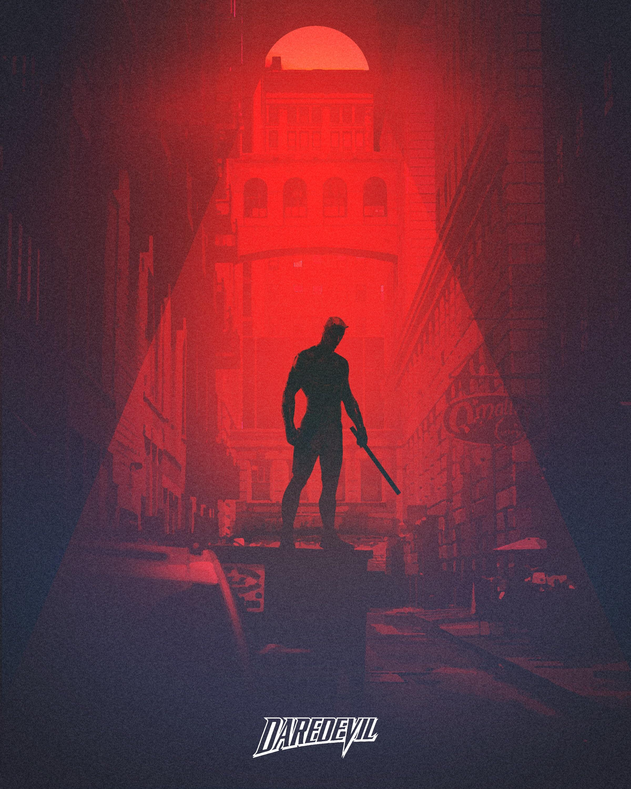

My name is Sarah Grant, sometimes on professors' rosters, my middle name "Tyler" pops up, however I don't respond to that.
My current major is Game Design. Am I going to stick with it once I transfer? Maybe...
I like to play some video games and draw, I play this trading card game called, "Magic: The Gathering." Sometimes, I go out to watch movies but really stick at home as much as I could. I've been getting into 3d sculpting as of late, it's hard for absolutely no reason. Even through the difficulty I face, it's surprisingly intuitive and fun to do. I'm also a comic book collector, I've slowed down over the past year or so and switched to digital reading.
The last TV show I watched was Daredevil. I'm currently on the last episode of season 3.

I mainly just use Youtube to watch gameplay and processess of people's art, occasionally some tech reviews and new electronics that may be releasing soon.
Pinterest is where I go to find references for my art and 3d sculpting. It's usually my go to when I'm not using twitter to look for cool art other people have made.
I use Spotify to listen to music duh. I've been listening to a lot more R&B lately (Mary J. Blige, Solange, Erykah Badu, D'Angelo, etc). But I also listen to a slightly wider variety, whether it's metal, video game soundtracks, jazz or rock.